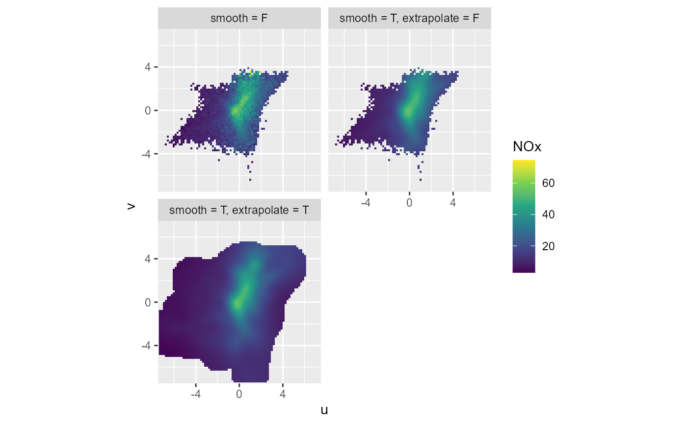

R/summary_wind_2d.R
summary_wind_2d.RdInput data should be original unbinned data including wind direction and wind velocity; binning is done 2-dimensional over cartesian u and v wind vectors
summary_wind_2d( data, ws, wd, z, groupings = grp(), fun = "mean", fun.args = list(), nmin = 3, ws_max = NA, bins = 10^2, smooth = TRUE, k = 100, extrapolate = TRUE, dist = 0.1 )
| data | a data.frame or tibble containing the data (wide format). requires input data including at least three columns carrying information regarding:
|
|---|---|
| ws | symbol giving the wind velocity parameter name (wind velocity preferably in m/s) |
| wd | symbol giving the wind direction parameter name in degrees |
| z | symbol giving the parameter name to be summarised |
| groupings | additional groupings. Use helper |
| fun | function or list of functions for summary. |
| fun.args | a list of extra arguments to pass to fun. |
| nmin | numeric, minimum number of values for fun, if n < nmin: NA is returned |
| ws_max | numeric or Inf, maximum wind velocity for binning: above ws_max, z is set NA |
| bins | numeric, number of bins over the range of values if |
| smooth | TRUE/FALSE, applies if groups = c("u", "v"); should smoothing of summary results should be performed
using |
| k | numeric, applies if smooth = TRUE; degree of smoothing in smooth term in |
| extrapolate | TRUE/FALSE, applies if smooth = TRUE; |
| dist | numeric, fraction of 1, applies if smooth = TRUE and extrapolate = TRUE; maximum distance to next coordinate-pair at which the result of fit_gam_surface(z) should be returned |
a tibble with summarised data along u and v wind vectors
a tibble is returned, binned over u and v, with variables:
wd: wind direction corresponding to midpoint value of u and v
ws: wind velocity corresponding to midpoint value of u and v
u: midpoints of bins over u (from input wd and ws)
v: midpoints of bins over v (from input wd and ws)
z: result from fun(z, ...)
library(ggplot2) fn <- rOstluft.data::f("Zch_Stampfenbachstrasse_2010-2014.csv") data <- rOstluft::read_airmo_csv(fn) data <- rOstluft::rolf_to_openair(data) # summary NO2 summary_wind_2d(data, ws, wd, NOx, smooth = FALSE)#> # A tibble: 100 x 8 #> u v stat n freq NOx wd ws #> <dbl> <dbl> <chr> <dbl> <dbl> <dbl> <dbl> <dbl> #> 1 -8.12 -8.12 mean 0 0 NA 45 11.5 #> 2 -8.12 -6.32 mean 0 0 NA 52.1 10.3 #> 3 -8.12 -4.51 mean 12 0.000138 6.08 60.9 9.29 #> 4 -8.12 -2.71 mean 18 0.000207 6.27 71.6 8.56 #> 5 -8.12 -0.903 mean 3 0.0000345 6.82 83.7 8.17 #> 6 -8.12 0.903 mean 0 0 NA 96.3 8.17 #> 7 -8.12 2.71 mean 0 0 NA 108. 8.56 #> 8 -8.12 4.51 mean 0 0 NA 119. 9.29 #> 9 -8.12 6.32 mean 0 0 NA 128. 10.3 #> 10 -8.12 8.12 mean 0 0 NA 135 11.5 #> # ... with 90 more rows# multiple stats: Pass function, by name, reference, as function or one sided formula funs <- list( "mean", "median" = function(x) median(x, na.rm = TRUE), "q95" = ~ stats::quantile(., probs = 0.95) ) summary_wind_2d(data, ws, wd, NOx, fun = funs, smooth = FALSE)#> # A tibble: 300 x 8 #> u v stat n freq NOx wd ws #> <dbl> <dbl> <chr> <dbl> <dbl> <dbl> <dbl> <dbl> #> 1 -8.12 -8.12 mean 0 0 NA 45 11.5 #> 2 -8.12 -8.12 median 0 0 NA 45 11.5 #> 3 -8.12 -8.12 q95 0 0 NA 45 11.5 #> 4 -8.12 -6.32 mean 0 0 NA 52.1 10.3 #> 5 -8.12 -6.32 median 0 0 NA 52.1 10.3 #> 6 -8.12 -6.32 q95 0 0 NA 52.1 10.3 #> 7 -8.12 -4.51 mean 12 0.000138 6.08 60.9 9.29 #> 8 -8.12 -4.51 median 12 0.000138 5.63 60.9 9.29 #> 9 -8.12 -4.51 q95 12 0.000138 8.23 60.9 9.29 #> 10 -8.12 -2.71 mean 18 0.000207 6.27 71.6 8.56 #> # ... with 290 more rows# is for some reason fun.args used with multiple functions, use ... to catch # superfluous arguments: funs <- list( "q95" = function(x, ...) stats::quantile(x, probs = 0.95), "mean" ) summary_wind_2d(data, ws, wd, NOx, fun = funs, fun.args = list(na.rm = TRUE), smooth = FALSE)#> # A tibble: 200 x 8 #> u v stat n freq NOx wd ws #> <dbl> <dbl> <chr> <dbl> <dbl> <dbl> <dbl> <dbl> #> 1 -8.12 -8.12 mean 0 0 NA 45 11.5 #> 2 -8.12 -8.12 q95 0 0 NA 45 11.5 #> 3 -8.12 -6.32 mean 0 0 NA 52.1 10.3 #> 4 -8.12 -6.32 q95 0 0 NA 52.1 10.3 #> 5 -8.12 -4.51 mean 12 0.000138 6.08 60.9 9.29 #> 6 -8.12 -4.51 q95 12 0.000138 8.23 60.9 9.29 #> 7 -8.12 -2.71 mean 18 0.000207 6.27 71.6 8.56 #> 8 -8.12 -2.71 q95 18 0.000207 10.4 71.6 8.56 #> 9 -8.12 -0.903 mean 3 0.0000345 6.82 83.7 8.17 #> 10 -8.12 -0.903 q95 3 0.0000345 8.83 83.7 8.17 #> # ... with 190 more rows#> # A tibble: 100 x 9 #> u v stat site n freq NOx wd ws #> <dbl> <dbl> <chr> <fct> <dbl> <dbl> <dbl> <dbl> <dbl> #> 1 -8.12 -8.12 mean Zch_Stampfenbachstrasse 0 0 NA 45 11.5 #> 2 -8.12 -6.32 mean Zch_Stampfenbachstrasse 0 0 NA 52.1 10.3 #> 3 -8.12 -4.51 mean Zch_Stampfenbachstrasse 12 0.000138 6.08 60.9 9.29 #> 4 -8.12 -2.71 mean Zch_Stampfenbachstrasse 18 0.000207 6.27 71.6 8.56 #> 5 -8.12 -0.903 mean Zch_Stampfenbachstrasse 3 0.0000345 6.82 83.7 8.17 #> 6 -8.12 0.903 mean Zch_Stampfenbachstrasse 0 0 NA 96.3 8.17 #> 7 -8.12 2.71 mean Zch_Stampfenbachstrasse 0 0 NA 108. 8.56 #> 8 -8.12 4.51 mean Zch_Stampfenbachstrasse 0 0 NA 119. 9.29 #> 9 -8.12 6.32 mean Zch_Stampfenbachstrasse 0 0 NA 128. 10.3 #> 10 -8.12 8.12 mean Zch_Stampfenbachstrasse 0 0 NA 135 11.5 #> # ... with 90 more rows# we can use expressions in grp For better readability groupings is # defined outside of the function call groupings = grp("site", year = lubridate::year(date)) summary_wind_2d(data, ws, wd, NOx, groupings = groupings, smooth = FALSE)#> # A tibble: 500 x 10 #> u v stat site year n freq NOx wd ws #> <dbl> <dbl> <chr> <fct> <dbl> <dbl> <dbl> <dbl> <dbl> <dbl> #> 1 -8.12 -8.12 mean Zch_Stampfenbachstrasse 2010 0 0 NA 45 11.5 #> 2 -8.12 -8.12 mean Zch_Stampfenbachstrasse 2011 0 0 NA 45 11.5 #> 3 -8.12 -8.12 mean Zch_Stampfenbachstrasse 2012 0 0 NA 45 11.5 #> 4 -8.12 -8.12 mean Zch_Stampfenbachstrasse 2013 0 0 NA 45 11.5 #> 5 -8.12 -8.12 mean Zch_Stampfenbachstrasse 2014 0 0 NA 45 11.5 #> 6 -8.12 -6.32 mean Zch_Stampfenbachstrasse 2010 0 0 NA 52.1 10.3 #> 7 -8.12 -6.32 mean Zch_Stampfenbachstrasse 2011 0 0 NA 52.1 10.3 #> 8 -8.12 -6.32 mean Zch_Stampfenbachstrasse 2012 0 0 NA 52.1 10.3 #> 9 -8.12 -6.32 mean Zch_Stampfenbachstrasse 2013 0 0 NA 52.1 10.3 #> 10 -8.12 -6.32 mean Zch_Stampfenbachstrasse 2014 0 0 NA 52.1 10.3 #> # ... with 490 more rows# smoothing df1 <- summary_wind_2d(data, ws, wd, NOx, bins = 100^2, smooth = FALSE) df2 <- summary_wind_2d(data, ws, wd, NOx, bins = 100^2, extrapolate = FALSE) df3 <- summary_wind_2d(data, ws, wd, NOx, bins = 100^2, smooth = TRUE) df <- dplyr::bind_rows( "smooth = F" = df1, "smooth = T, extrapolate = F" = df2, "smooth = T, extrapolate = T" = df3, .id = "smoothing" ) ggplot(df, aes(x = u, y = v, fill = NOx)) + coord_fixed(expand = FALSE) + lims(x = c(-7.5, 7.5), y = c(-7.5, 7.5)) + geom_raster() + scale_fill_viridis_c(na.value = NA) + facet_wrap(vars(smoothing), ncol = 2)#> Warning: Removed 23382 rows containing missing values (geom_raster).# for a small number of bins reduce k summary_wind_2d(data, ws, wd, NO2, bins = 5^2, smooth = TRUE, k = 5)#> # A tibble: 25 x 8 #> stat u v n freq NO2 wd ws #> <chr> <dbl> <dbl> <dbl> <dbl> <dbl> <dbl> <dbl> #> 1 mean -7.22 -7.22 0 0 NA 45 10.2 #> 2 mean -7.22 -3.61 211 0.00243 8.90 63.4 8.07 #> 3 mean -7.22 0 26 0.000299 10.0 90 7.22 #> 4 mean -7.22 3.61 4 0.0000461 9.19 117. 8.07 #> 5 mean -7.22 7.22 0 0 NA 135 10.2 #> 6 mean -3.61 -7.22 7 0.0000806 10.8 26.6 8.07 #> 7 mean -3.61 -3.61 1858 0.0214 17.2 45 5.11 #> 8 mean -3.61 0 8147 0.0938 20.0 90 3.61 #> 9 mean -3.61 3.61 186 0.00214 18.5 135 5.11 #> 10 mean -3.61 7.22 0 0 NA 153. 8.07 #> # ... with 15 more rows